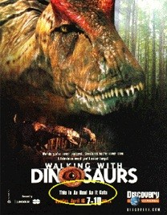

| Evolution in the Media - June 2000 |
| by Do-While Jones |
One can't honestly characterize evolutionists' views about dinosaurs in a movie where the dinosaurs speak English! That would be as unfair as claiming that the Flintstones is an accurate portrayal of creationists' beliefs. But prejudices, doctrines, propaganda, and beliefs do sometimes appear as subliminal messages in fantasy films.
Tom Cummings (the film critic who wrote the article in favor of evolution which we responded to two months ago) made this observation:
| The meat-eaters, by the way, are mindless, grunting bores, while the plant-eaters are thoughtful and cherish human values. In reality, the predators would have most likely harnessed the largest amount of brain power. Hey, is it just me, or do I sense some kind of subtextual vegetarian propaganda here? 1 |
Well, being a vegetarian myself, it is tempting to take the troll about the relationship between diet and intelligence. In fact, in June 1997, we did discuss the assertion "Meat and bone marrow also gave them [Homo erectus] the extra energy to grow larger brains" . We also discussed the relationship between brain size and intelligence in our July 1997 newsletter. But Tom has noticed (as we have) that some movies make hidden statements about political or religious issues We believe that even fictional movies like Dinosaur do affect how we perceive scientific evidence.
 ) A few weeks ago she attended a wedding in Las Vegas, so I gave her some tips on what to see while she was there. After she got back from her trip she wrote,
) A few weeks ago she attended a wedding in Las Vegas, so I gave her some tips on what to see while she was there. After she got back from her trip she wrote,
| But....you didn't tell me of the MAIN attraction at the Mirage! The salt-water aquarium behind the Registration desk!! It has hundreds of colorful fish and corals....and three different types of sharks!!!!! (all about 1 foot long, it seemed). And everybody was getting along fine!! I watched that (and the passing people) for over an hour (I was really tired!). |
She was surprised that sharks and fish might live in the same aquarium, probably because movies like Jaws have given us the impression that sharks are always hungry and attack everything they see. To a lesser extent, the movies have given us a similar fear of lions. But can you remember a time you ever went to the zoo and saw a lion that wasn't sleeping? You probably cheered if one raised his head and looked around.
Movies like Jurassic Park leave us with the impression that Tyrannosaurus Rex attacked everything that moved. This probably isn't accurate. But how interesting would Jurassic Park have been if the carnivorous dinosaurs slept most of the time? Sometimes scientific accuracy is sacrificed in order to make the plot more interesting. That's why the dinosaurs talked in Dinosaur. And, that's why we don't take Dinosaur too seriously.
 |
|
The next time you go to a natural history museum, please remember that.
|
Some researchers were unstinting in their praise ... But others cringed at the way it blurred fact and fiction. Most of the egg-laying sequence, for example, is a screenwriter's fantasy: There is no scientific evidence that the giant dinosaur Diplodocus had an ovipositor or abandoned its young. "Some of the arguments were just so far-fetched, so ridiculous," says Norman MacLeod, and invertebrate paleontologist at the Natural History Museum in London. "I was embarrassed for the profession."
3
But [Tom] Holtz [a vertebrate paleontologist at the University of Maryland, College Park, who consulted with the BBC on the project] argues that anything in paleontology-other than drawing the bones in the ground--involves some degree of speculation. And in portraying extinct animals on television, [BBC producer and former zoologist Tim] Haines says, guesswork is unavoidable. 4 |
The next time you go to a natural history museum, please remember that.
We think that the digital modeling (in both Dinosaur and Walking With Dinosaurs) produced a very accurate representation of how dinosaurs moved. The process of calculating how much force would be needed to move the various bones at given speeds, requires the scientists to examine the problem of dinosaur motion in much more detail than had ever been done before. But no matter how accurately they figured out how dinosaurs were capable of moving, they still had to guess where they went and why they went there.
The producers of Walking had to deliver a product that would interest the public. That must have affected some of their decisions. Why did they use the scene where the Postosuchus marked its territory with a gushing stream of urine in advertisements for the show, even though living birds and reptiles don't urinate? Maybe they thought it would appeal to the 10- to 19-year-old male demographic. By including many battles between dinosaurs, they tried to make the program more exciting. It turned out that three hours of watching dinosaurs chase each other was about two hours too many. Even if you let the plant-eating dinosaurs talk, it gets boring in a hurry.
The entire three hours you were watching dinosaurs chase each other, the narrator was telling you that dinosaurs evolved various adaptations to win the battle for survival. Coupled with the realistic digital images, it sounded factual. But it was all just speculation.
| Quick links to | |||
|---|---|---|---|
| Science Against Evolution Home page |
Back issues of Disclosure (our newsletter) |
Web Site of the Month |
Topical Index |
Footnotes:
1
The Daily Independent, 21 May 2000, "'Dinosaur' gets high marks visually, but plot is soft" page A6
(Ev)
2
Time, April 17, 2000, "A Modern Jurassic Family", page 80
(Ev)
3
Science, Vol. 288, 7 April 2000, "Dinosaur Docudrama Blends Fact, Fantasy" page 3
(Ev)
4
ibid.